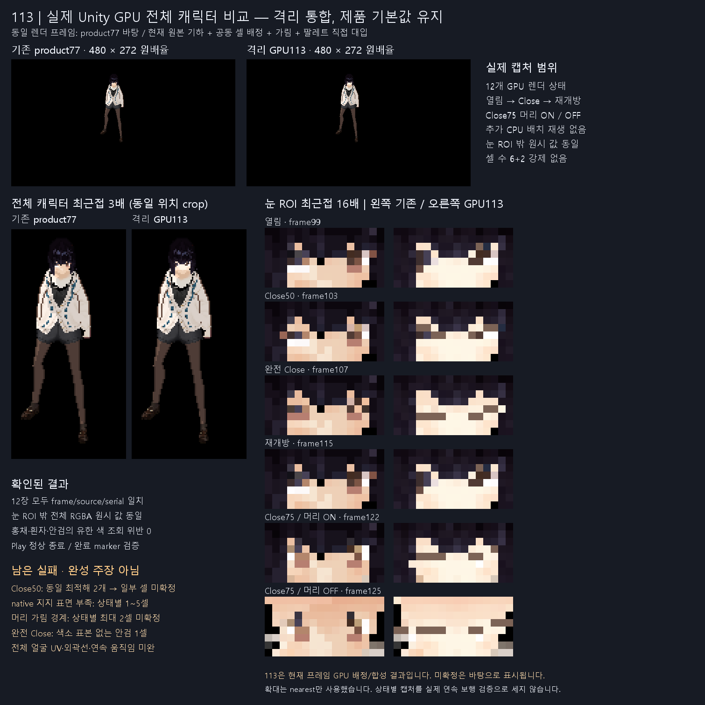

Argon2.3의 명시적 자기 눈 주변 피부 소유권 규칙을 연결하고, 현재 원본 기하·색소 곡선·독립 가림·공동 셀 배정·유한 색 조회를 정상 RenderGraph에서 실행했습니다. 아래는 실제 같은 프레임의 제품77 전체 렌더와 GPU113 눈/바탕 타일 합성입니다. 오프라인 배치 재생이 아닙니다.
미채택 후보입니다. Close50의 두 동등해, 최종 carrier 부족, 일부 가림 불확실 및 안검 색소 표본 1셀 부재가 남습니다. 전체 얼굴 UV 분할·외곽선·연속 움직임·다중뷰와 GPU 시간은 검증되지 않았습니다.
전체 비교 원본 PNG · 기존 전체480×272 · GPU113 전체480×272 · 실제 Close/reopen 상태 시퀀스 (상태 간 프레임 간격 있음; 보행 연속성 시험 아님)

검증: 실제12프레임 · 독립 CPU/GPU 점수·해 비교24눈 · 최종 선형 LUT·가림/재개방 검사 · 상태·입력·파일 보존 · 적용·미해결·정책 한계 · 코드 함수 위치 · 완료한 실제 입력12프레임
기존 인계: PIXEL_ALBEDO_20261030.md §113. 오프라인 재검산은 이 폴더에서 python -B check113.py, python -B oracle113.py입니다. NumPy/Pillow 및 저장소의109 binary reader를 재사용합니다. 파일을 추출하거나 Unity를 실행하지 않습니다. report113.py는 보관된 원시 버퍼로 PNG를 재작성합니다.
새 실제 캡처를 실행하는 코드가 아닌 검토용 실행 당시 소스 RUN_Capture113e.cs.txt도 보존했습니다. 원래 절대 경로가 있으므로 그대로 재실행하지 마십시오. 모든 시행과 실패는 보존 검증에 기록했습니다. 기본 제품으로 전환하지 않았으며 스크린샷/CUA·저장·초기화·설정 객체 교체는 하지 않았습니다.